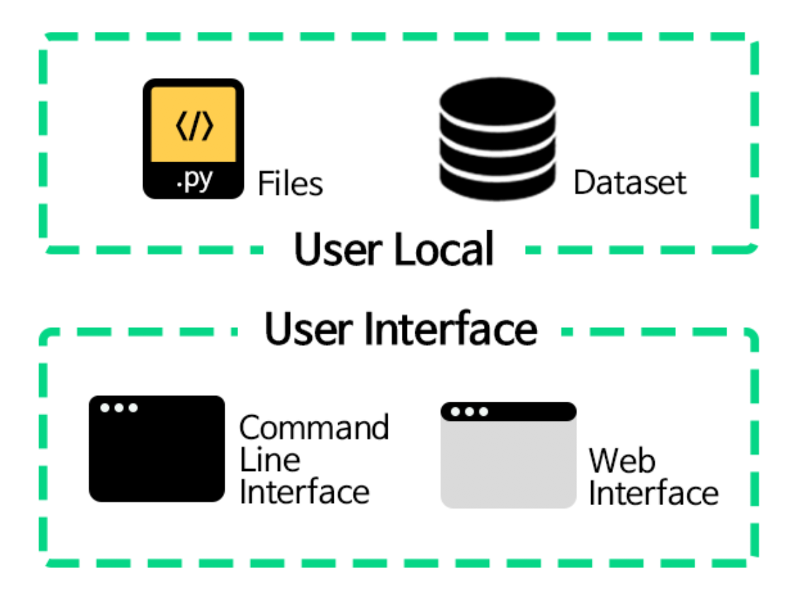

Welcome to NSML Documentation¶
NSML은 연구에 불필요한 작업들을 제거하고, GPU 자원의 효율적인 사용을 위해 개발된 MLaaS (Machine Learning as a Service), 클라우드 플랫폼입니다.
딥러닝 알고리즘 설계 과정에서 쉽고 빠르게 AI 연구개발이 가능하도록 돕는 역할을 수행합니다. 단순히 CLI와 Web interface만으로 복잡한 설정 없이 AI 학습을 진행할 수 있으며, 진행 과정을 모니터링 할 수 있습니다.
이 문서에서는 여러분들이 NSML에 친숙해질 수 있도록 다양한 정보를 안내하고 있습니다. NSML 개념, 명령어, 주의 사항들을 알아보실 수 있습니다. NSML이 여러분들의 해커톤 대회 기간 동안 큰 도움이 되길 바랍니다.
NSML Intro¶
NSML은 어떻게 작동할까요? Intro 파트에서는 NSML의 원리와 개념을 안내합니다. 먼저 NSML 사용법을 알고 싶으시다면 아래 내용을 생략하고 다음 파트인 Getting Started 파트로 넘어가시기 바랍니다. 다만 NSML을 본격적으로 사용하고 싶으시다면 이 페이지에 있는 내용은 꼭 숙지하시는 것이 좋습니다.
Session and model¶
NSML에서는 session이라는 개념이 계속 등장합니다. 여러분의 코드가 실행되는 하나의 작업 단위를
session이라 부릅니다. 그리고 하나의 session 안에서는 여러 개의model을 run(진행)하면서 여러분들이 원하는 AI 작업을 수행합니다. 이 모델들은checkpoint라는 번호로 구분되어 계속 저장됩니다.NSML을 돌릴 때 local에서 만든 file(entry file 포함)에서 nsml.save 라는 함수를 사용할 때마다 checkpoint가 생성됩니다. 또는 세션이 진행되는 도중에 web interface에서 save 버튼을 누를 때마다 checkpoint가 생성됩니다.
Prerequisites and User Interface¶
NSML을 사용하기 위해 숙지해야 할 준비물 2가지와 User Interface 2가지를 소개합니다.
User Local은 local 환경에서 필요한 것들입니다.
- Files : 첫 시작점으로 불리는
entry file(예. main.py)을 포함한 파일들을 지칭합니다. NSML에 사용하는 명령어들과 머신러닝 모델들을 적는 파일입니다. NSML library 섹션을 참고하여 file을 정의하면 됩니다.- Dataset : NSML에서 session을 돌릴 때 활용하는 dataset입니다. daataset은 NSML에 이미 push되어 있습니다. dataset을 조회하기 위해 dataset 명령어를 참고하시기 바랍니다.
User Interface는 NSML을 활용할 때 사용하는 도구입니다.
- Command Line Interface(CLI) : NSML과 명령어(command)로 소통하는 interface입니다. Windows의 cmd, Mac OS의 터미널을 지칭합니다. NSML을 다운받고 세팅을 마치면 NSML command를 사용하실 수 있습니다.
- Web interface : session들의 진행 상황과 visualization을 확인할 수 있습니다. https://hack.nsml.navercorp.com 으로 접속하시면 됩니다.
그럼 이제 다음 페이지에서 NSML 사용법을 알아보겠습니다.